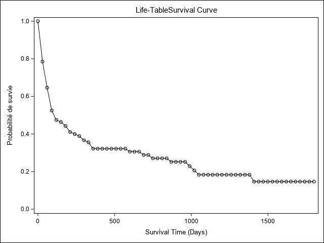
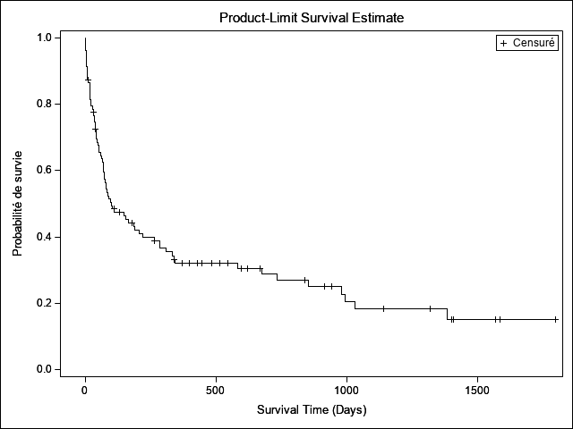
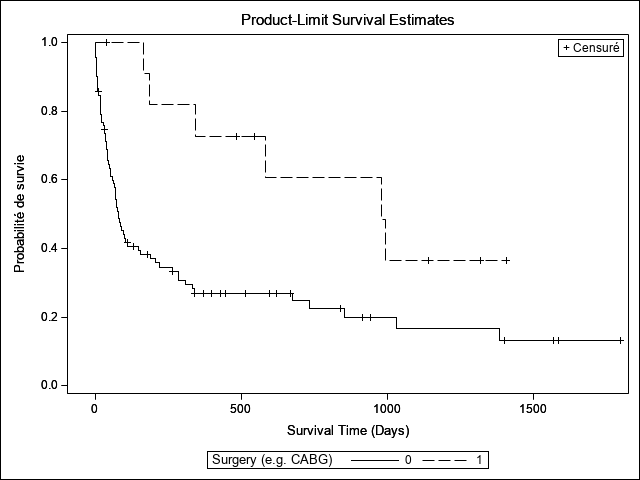
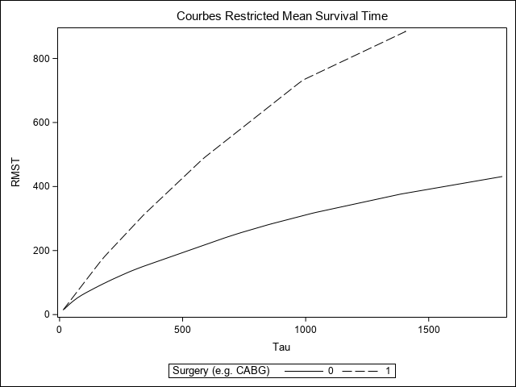
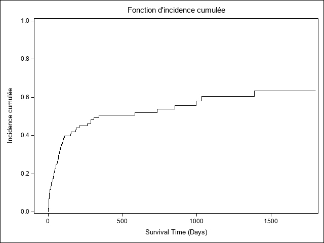

Sélection des outputs
Selon le type d’analyse la totalité des outputs ne seront pas reproduits (ods include ou ods exclude pour la sélection). Un problème spécifique s’observe pour le tableau des estimateurs de Kaplan-Meir qui est particulièrement illisible en présence d’un nombre important d’observation censurées à droite.
exemple pour proc lifetest: noms des outputs récupérés dans la log
Output Added:
-------------
Name: ProductLimitEstimates
Label: Product-Limit Estimates
Template: Stat.Lifetest.ProductLimitEstimates
Path: Lifetest.Stratum1.ProductLimitEstimates
-------------
Output Added:
-------------
Name: Quartiles
Label: Quartiles of the Survival Distribution
Template: Stat.Lifetest.Quartiles
Path: Lifetest.Stratum1.TimeSummary.Quartiles
-------------
Output Added:
-------------
Name: Means
Label: Mean
Template: Stat.Lifetest.Means
Path: Lifetest.Stratum1.TimeSummary.Means
-------------
Output Added:
-------------
Name: SurvivalPlot
Label: Survival Curve
Template: Stat.Lifetest.Graphics.ProductLimitSurvival
Path: Lifetest.Stratum1.SurvivalPlot
-------------
Output Added:
-------------
Name: CensoredSummary
Label: Censored Summary
Template: Stat.Lifetest.CensoredSummary
Path: Lifetest.CensoredSummaryUtiliser de préférence le nom figurant dans la ligne path: (si comparaison de deux strates, le nom figurant dans la ligne name est identique).
libname x "D:\Marc\SMS\FORMATIONS\2019\analyse durees\a distribuer\";Avec une longueur d’intervalle fixe égale à 30 jours.
proc lifetest data=x.transplantation method=lifetable width=30;
time stime*died(0);run;| Valeurs estimées de survie de la table de survie | |||||||||||||||
|---|---|---|---|---|---|---|---|---|---|---|---|---|---|---|---|
| Intervalle |
Nombre d'échecs |
Nombre censuré |
Taille effective de l'échantillon |
Probabilité conditionnelle de défaillance |
Erreur type de la probabilité conditionnelle |
Survie | Echec |
Erreur type de survie |
Durée de vie Résidus Médiane |
Erreur type de la médiane |
Evalué(e) au centre de classe de l'intervalle | ||||
| [Inférieur, | Supérieur) |
Erreur type |
Hasard |
Erreur type de hasard |
|||||||||||
| 0 | 30 | 22 | 1 | 102.5 | 0.2146 | 0.0406 | 1.0000 | 0 | 0 | 104.7 | 29.0660 | 0.00715 | 0.00135 | 0.008015 | 0.001696 |
| 30 | 60 | 14 | 2 | 79.0 | 0.1772 | 0.0430 | 0.7854 | 0.2146 | 0.0406 | 229.4 | 121.0 | 0.00464 | 0.00115 | 0.006481 | 0.001724 |
| 60 | 90 | 12 | 0 | 64.0 | 0.1875 | 0.0488 | 0.6462 | 0.3538 | 0.0475 | 298.7 | 35.7872 | 0.00404 | 0.00109 | 0.006897 | 0.00198 |
| 90 | 120 | 5 | 1 | 51.5 | 0.0971 | 0.0413 | 0.5250 | 0.4750 | 0.0498 | 762.7 | 58.8416 | 0.00170 | 0.000740 | 0.003401 | 0.001519 |
| 120 | 150 | 1 | 1 | 45.5 | 0.0220 | 0.0217 | 0.4741 | 0.5259 | 0.0499 | 859.3 | 46.0561 | 0.000347 | 0.000345 | 0.000741 | 0.000741 |
| 150 | 180 | 2 | 0 | 44.0 | 0.0455 | 0.0314 | 0.4636 | 0.5364 | 0.0499 | 836.2 | 45.8052 | 0.000702 | 0.000491 | 0.00155 | 0.001096 |
| 180 | 210 | 3 | 1 | 41.5 | 0.0723 | 0.0402 | 0.4426 | 0.5574 | 0.0498 | 820.0 | 45.0209 | 0.00107 | 0.000605 | 0.0025 | 0.001442 |
| 210 | 240 | 1 | 0 | 38.0 | 0.0263 | 0.0260 | 0.4106 | 0.5894 | 0.0495 | 810.9 | 43.6474 | 0.000360 | 0.000358 | 0.000889 | 0.000889 |
| 240 | 270 | 1 | 1 | 36.5 | 0.0274 | 0.0270 | 0.3998 | 0.6002 | 0.0494 | 788.0 | 43.3633 | 0.000365 | 0.000363 | 0.000926 | 0.000926 |
| 270 | 300 | 2 | 0 | 35.0 | 0.0571 | 0.0392 | 0.3888 | 0.6112 | 0.0492 | 765.2 | 43.0695 | 0.000741 | 0.000517 | 0.001961 | 0.001386 |
| 300 | 330 | 1 | 0 | 33.0 | 0.0303 | 0.0298 | 0.3666 | 0.6334 | 0.0488 | 749.8 | 41.8209 | 0.000370 | 0.000368 | 0.001026 | 0.001026 |
| 330 | 360 | 3 | 1 | 31.5 | 0.0952 | 0.0523 | 0.3555 | 0.6445 | 0.0486 | 1054.4 | 25.9424 | 0.00113 | 0.000639 | 0.003333 | 0.001922 |
| 360 | 390 | 0 | 1 | 27.5 | 0 | 0 | 0.3216 | 0.6784 | 0.0478 | 1038.3 | 25.1208 | 0 | . | 0 | . |
| 390 | 420 | 0 | 1 | 26.5 | 0 | 0 | 0.3216 | 0.6784 | 0.0478 | 1008.3 | 25.5904 | 0 | . | 0 | . |
| 420 | 450 | 0 | 2 | 25.0 | 0 | 0 | 0.3216 | 0.6784 | 0.0478 | 978.3 | 26.3469 | 0 | . | 0 | . |
| 450 | 480 | 0 | 0 | 24.0 | 0 | 0 | 0.3216 | 0.6784 | 0.0478 | 948.3 | 26.8902 | 0 | . | 0 | . |
| 480 | 510 | 0 | 1 | 23.5 | 0 | 0 | 0.3216 | 0.6784 | 0.0478 | 918.3 | 27.1748 | 0 | . | 0 | . |
| 510 | 540 | 0 | 1 | 22.5 | 0 | 0 | 0.3216 | 0.6784 | 0.0478 | 888.3 | 27.7721 | 0 | . | 0 | . |
| 540 | 570 | 0 | 1 | 21.5 | 0 | 0 | 0.3216 | 0.6784 | 0.0478 | 858.3 | 28.4106 | 0 | . | 0 | . |
| 570 | 600 | 1 | 1 | 20.5 | 0.0488 | 0.0476 | 0.3216 | 0.6784 | 0.0478 | 828.3 | 29.0953 | 0.000523 | 0.000516 | 0.001667 | 0.001666 |
| 600 | 630 | 0 | 1 | 18.5 | 0 | 0 | 0.3059 | 0.6941 | 0.0479 | 804.7 | 29.1337 | 0 | . | 0 | . |
| 630 | 660 | 0 | 0 | 18.0 | 0 | 0 | 0.3059 | 0.6941 | 0.0479 | 774.7 | 29.5355 | 0 | . | 0 | . |
| 660 | 690 | 1 | 1 | 17.5 | 0.0571 | 0.0555 | 0.3059 | 0.6941 | 0.0479 | 744.7 | 29.9545 | 0.000583 | 0.000573 | 0.001961 | 0.00196 |
| 690 | 720 | 0 | 0 | 16.0 | 0 | 0 | 0.2885 | 0.7115 | 0.0483 | . | . | 0 | . | 0 | . |
| 720 | 750 | 1 | 0 | 16.0 | 0.0625 | 0.0605 | 0.2885 | 0.7115 | 0.0483 | . | . | 0.000601 | 0.000590 | 0.002151 | 0.002149 |
| 750 | 780 | 0 | 0 | 15.0 | 0 | 0 | 0.2704 | 0.7296 | 0.0485 | . | . | 0 | . | 0 | . |
| 780 | 810 | 0 | 0 | 15.0 | 0 | 0 | 0.2704 | 0.7296 | 0.0485 | . | . | 0 | . | 0 | . |
| 810 | 840 | 0 | 0 | 15.0 | 0 | 0 | 0.2704 | 0.7296 | 0.0485 | . | . | 0 | . | 0 | . |
| 840 | 870 | 1 | 1 | 14.5 | 0.0690 | 0.0665 | 0.2704 | 0.7296 | 0.0485 | . | . | 0.000622 | 0.000610 | 0.002381 | 0.002379 |
| 870 | 900 | 0 | 0 | 13.0 | 0 | 0 | 0.2518 | 0.7482 | 0.0486 | . | . | 0 | . | 0 | . |
| 900 | 930 | 0 | 1 | 12.5 | 0 | 0 | 0.2518 | 0.7482 | 0.0486 | . | . | 0 | . | 0 | . |
| 930 | 960 | 0 | 1 | 11.5 | 0 | 0 | 0.2518 | 0.7482 | 0.0486 | . | . | 0 | . | 0 | . |
| 960 | 990 | 1 | 0 | 11.0 | 0.0909 | 0.0867 | 0.2518 | 0.7482 | 0.0486 | . | . | 0.000763 | 0.000742 | 0.003175 | 0.003171 |
| 990 | 1020 | 1 | 0 | 10.0 | 0.1000 | 0.0949 | 0.2289 | 0.7711 | 0.0493 | . | . | 0.000763 | 0.000742 | 0.003509 | 0.003504 |
| 1020 | 1050 | 1 | 0 | 9.0 | 0.1111 | 0.1048 | 0.2060 | 0.7940 | 0.0494 | . | . | 0.000763 | 0.000742 | 0.003922 | 0.003915 |
| 1050 | 1080 | 0 | 0 | 8.0 | 0 | 0 | 0.1831 | 0.8169 | 0.0489 | . | . | 0 | . | 0 | . |
| 1080 | 1110 | 0 | 0 | 8.0 | 0 | 0 | 0.1831 | 0.8169 | 0.0489 | . | . | 0 | . | 0 | . |
| 1110 | 1140 | 0 | 0 | 8.0 | 0 | 0 | 0.1831 | 0.8169 | 0.0489 | . | . | 0 | . | 0 | . |
| 1140 | 1170 | 0 | 1 | 7.5 | 0 | 0 | 0.1831 | 0.8169 | 0.0489 | . | . | 0 | . | 0 | . |
| 1170 | 1200 | 0 | 0 | 7.0 | 0 | 0 | 0.1831 | 0.8169 | 0.0489 | . | . | 0 | . | 0 | . |
| 1200 | 1230 | 0 | 0 | 7.0 | 0 | 0 | 0.1831 | 0.8169 | 0.0489 | . | . | 0 | . | 0 | . |
| 1230 | 1260 | 0 | 0 | 7.0 | 0 | 0 | 0.1831 | 0.8169 | 0.0489 | . | . | 0 | . | 0 | . |
| 1260 | 1290 | 0 | 0 | 7.0 | 0 | 0 | 0.1831 | 0.8169 | 0.0489 | . | . | 0 | . | 0 | . |
| 1290 | 1320 | 0 | 0 | 7.0 | 0 | 0 | 0.1831 | 0.8169 | 0.0489 | . | . | 0 | . | 0 | . |
| 1320 | 1350 | 0 | 1 | 6.5 | 0 | 0 | 0.1831 | 0.8169 | 0.0489 | . | . | 0 | . | 0 | . |
| 1350 | 1380 | 0 | 0 | 6.0 | 0 | 0 | 0.1831 | 0.8169 | 0.0489 | . | . | 0 | . | 0 | . |
| 1380 | 1410 | 1 | 2 | 5.0 | 0.2000 | 0.1789 | 0.1831 | 0.8169 | 0.0489 | . | . | 0.00122 | 0.00114 | 0.007407 | 0.007362 |
| 1410 | 1440 | 0 | 0 | 3.0 | 0 | 0 | 0.1465 | 0.8535 | 0.0510 | . | . | 0 | . | 0 | . |
| 1440 | 1470 | 0 | 0 | 3.0 | 0 | 0 | 0.1465 | 0.8535 | 0.0510 | . | . | 0 | . | 0 | . |
| 1470 | 1500 | 0 | 0 | 3.0 | 0 | 0 | 0.1465 | 0.8535 | 0.0510 | . | . | 0 | . | 0 | . |
| 1500 | 1530 | 0 | 0 | 3.0 | 0 | 0 | 0.1465 | 0.8535 | 0.0510 | . | . | 0 | . | 0 | . |
| 1530 | 1560 | 0 | 0 | 3.0 | 0 | 0 | 0.1465 | 0.8535 | 0.0510 | . | . | 0 | . | 0 | . |
| 1560 | 1590 | 0 | 2 | 2.0 | 0 | 0 | 0.1465 | 0.8535 | 0.0510 | . | . | 0 | . | 0 | . |
| 1590 | 1620 | 0 | 0 | 1.0 | 0 | 0 | 0.1465 | 0.8535 | 0.0510 | . | . | 0 | . | 0 | . |
| 1620 | 1650 | 0 | 0 | 1.0 | 0 | 0 | 0.1465 | 0.8535 | 0.0510 | . | . | 0 | . | 0 | . |
| 1650 | 1680 | 0 | 0 | 1.0 | 0 | 0 | 0.1465 | 0.8535 | 0.0510 | . | . | 0 | . | 0 | . |
| 1680 | 1710 | 0 | 0 | 1.0 | 0 | 0 | 0.1465 | 0.8535 | 0.0510 | . | . | 0 | . | 0 | . |
| 1710 | 1740 | 0 | 0 | 1.0 | 0 | 0 | 0.1465 | 0.8535 | 0.0510 | . | . | 0 | . | 0 | . |
| 1740 | 1770 | 0 | 0 | 1.0 | 0 | 0 | 0.1465 | 0.8535 | 0.0510 | . | . | 0 | . | 0 | . |
| 1770 | 1800 | 0 | 1 | 0.5 | 0 | 0 | 0.1465 | 0.8535 | 0.0510 | . | . | 0 | . | 0 | . |
| 1800 | . | 0 | 0 | 0.0 | 0 | 0 | 0.1465 | 0.8535 | 0.0510 | . | . | . | . | . | . |

|
Récapitulatif du nombre de valeurs censurées et non censurées |
|||
|---|---|---|---|
| Total | A échoué | Censuré |
Pourcentage censuré |
| 103 | 75 | 28 | 27.18 |
La durée médiane se lit sur la première ligne de la colonne de “Durée de vie résidus médiane” (Sas version française). Les lignes suivantes reporte la durée de séjour médiane sur la population restant soumise au risque à chaque intervalle.
Le tableau des estimateurs ne sera pas reporté (voir intro du document).
Pour récupérer ces estimateurs, on peut les récupérer via l’instruction output et les exporter, par exemple, dans un tableur.
ods exclude Lifetest.Stratum1.ProductLimitEstimates;
proc lifetest data=x.transplantation;
time stime*died(0); run;
| Statistiques descriptives pour variable temps STIME |
| Estimations du quartile | ||||
|---|---|---|---|---|
| Pourcentage |
Valeur estimée du point |
Intervalle de confiance à 95% | ||
| Transformation | [Inférieur | Supérieur) | ||
| 75 | 979.00 | LOGLOG | 340.00 | . |
| 50 | 100.00 | LOGLOG | 69.00 | 219.00 |
| 25 | 36.00 | LOGLOG | 16.00 | 51.00 |
| Moyenne |
Erreur type |
|---|---|
| 431.30 | 56.21 |
| Note: | Le temps de survie moyen et son erreur type ont été sous-estimés car l'observation la plus grande a été censurée et l'estimation a été limitée au temps d'événement le plus élevé. |

|
Récapitulatif du nombre de valeurs censurées et non censurées |
|||
|---|---|---|---|
| Total | A échoué | Censuré |
Pourcentage censuré |
| 103 | 75 | 28 | 27.18 |
Warning sur la durée moyenne reportée Sauf exception ne pas interpréter le tableau donnant la durée moyenne. Se reporter à l’estimation des RMST plus bas.
Comparaison des fonctions de survie
Tests du log rank
ods exclude Lifetest.Stratum1.ProductLimitEstimates Lifetest.Stratum2.ProductLimitEstimates ;
proc lifetest data=x.transplantation;
time stime*died(0);
strata surgery / test=all;
run;
| Statistiques descriptives pour variable temps STIME |
| Estimations du quartile | ||||
|---|---|---|---|---|
| Pourcentage |
Valeur estimée du point |
Intervalle de confiance à 95% | ||
| Transformation | [Inférieur | Supérieur) | ||
| 75 | 675.00 | LOGLOG | 219.00 | 1386.00 |
| 50 | 78.00 | LOGLOG | 58.00 | 149.00 |
| 25 | 30.00 | LOGLOG | 16.00 | 43.00 |
| Moyenne |
Erreur type |
|---|---|
| 376.36 | 58.31 |
| Note: | Le temps de survie moyen et son erreur type ont été sous-estimés car l'observation la plus grande a été censurée et l'estimation a été limitée au temps d'événement le plus élevé. |
| Statistiques descriptives pour variable temps STIME |
| Estimations du quartile | ||||
|---|---|---|---|---|
| Pourcentage |
Valeur estimée du point |
Intervalle de confiance à 95% | ||
| Transformation | [Inférieur | Supérieur) | ||
| 75 | . | LOGLOG | 979.00 | . |
| 50 | 979.00 | LOGLOG | 186.00 | . |
| 25 | 342.00 | LOGLOG | 165.00 | 995.00 |
| Moyenne |
Erreur type |
|---|---|
| 734.76 | 114.13 |
| Note: | Le temps de survie moyen et son erreur type ont été sous-estimés car l'observation la plus grande a été censurée et l'estimation a été limitée au temps d'événement le plus élevé. |
| Récapitulatif du nombre de valeurs censurées et non censurées | |||||
|---|---|---|---|---|---|
|
Niveau de discrétisation |
SURGERY | Total | A échoué | Censuré |
Pourcentage censuré |
| 1 | 0 | 91 | 69 | 22 | 24.18 |
| 2 | 1 | 12 | 6 | 6 | 50.00 |
| Total | 103 | 75 | 28 | 27.18 | |
| Test de l'homogénéité des courbes de survie pour STIME sur les niveaux de discrétisation |
| Statistiques de rang | ||||||
|---|---|---|---|---|---|---|
| SURGERY | Log-rang | Wilcoxon | Tarone | Peto | PetoModifié | Fleming |
| 0 | 8.6566 | 623.00 | 73.11 | 6.0506 | 5.9690 | 6.1547 |
| 1 | -8.6566 | -623.00 | -73.11 | -6.0506 | -5.9690 | -6.1547 |
|
Matrice de covariance pour la statistique de log-rang |
||
|---|---|---|
| SURGERY | 0 | 1 |
| 0 | 11.3712 | -11.3712 |
| 1 | -11.3712 | 11.3712 |
|
Matrice de covariance pour la statistique de Wilcoxon |
||
|---|---|---|
| SURGERY | 0 | 1 |
| 0 | 43174.6 | -43174.6 |
| 1 | -43174.6 | 43174.6 |
|
Matrice de covariance pour la statistique de Tarone |
||
|---|---|---|
| SURGERY | 0 | 1 |
| 0 | 631.550 | -631.550 |
| 1 | -631.550 | 631.550 |
|
Matrice de covariance pour la statistique de Peto |
||
|---|---|---|
| SURGERY | 0 | 1 |
| 0 | 4.22545 | -4.22545 |
| 1 | -4.22545 | 4.22545 |
|
Matrice de covariance pour la statistique de Peto modifiées |
||
|---|---|---|
| SURGERY | 0 | 1 |
| 0 | 4.09404 | -4.09404 |
| 1 | -4.09404 | 4.09404 |
|
Matrice de covariance pour la statistique de Fleming |
||
|---|---|---|
| SURGERY | 0 | 1 |
| 0 | 4.37875 | -4.37875 |
| 1 | -4.37875 | 4.37875 |
| Test d'égalité sur les niveaux de discrétisation | |||
|---|---|---|---|
| Test | khi-2 | DDL |
Pr > khi-2 |
| Log-rang | 6.5900 | 1 | 0.0103 |
| Wilcoxon | 8.9898 | 1 | 0.0027 |
| Tarone | 8.4624 | 1 | 0.0036 |
| Peto | 8.6641 | 1 | 0.0032 |
| Peto modifié | 8.7027 | 1 | 0.0032 |
| Fleming(1) | 8.6508 | 1 | 0.0033 |

Comparaison des RMST
Disponible avec le dernier module stat de Sas base (Sas-Stat 15.1 novembre 2018).
ods exclude Lifetest.Stratum1.ProductLimitEstimates;
proc lifetest data=x.transplantation rmst plots=(rmst);
time stime*died(0);
strata surgery; run;
| Statistiques descriptives pour variable temps STIME |
| Estimations du quartile | ||||
|---|---|---|---|---|
| Pourcentage |
Valeur estimée du point |
Intervalle de confiance à 95% | ||
| Transformation | [Inférieur | Supérieur) | ||
| 75 | 675.00 | LOGLOG | 219.00 | 1386.00 |
| 50 | 78.00 | LOGLOG | 58.00 | 149.00 |
| 25 | 30.00 | LOGLOG | 16.00 | 43.00 |
| Moyenne |
Erreur type |
|---|---|
| 376.36 | 58.31 |
| Note: | Le temps de survie moyen et son erreur type ont été sous-estimés car l'observation la plus grande a été censurée et l'estimation a été limitée au temps d'événement le plus élevé. |
| Valeurs estimées de survie de Kaplan-Meier | ||||||
|---|---|---|---|---|---|---|
| STIME | Survie | Echec |
Erreur type de survie |
Nombre d'échecs |
Nombre restant |
|
| 0.00 | 1.0000 | 0 | 0 | 0 | 12 | |
| 39.00 | * | . | . | . | 0 | 11 |
| 165.00 | 0.9091 | 0.0909 | 0.0867 | 1 | 10 | |
| 186.00 | 0.8182 | 0.1818 | 0.1163 | 2 | 9 | |
| 342.00 | 0.7273 | 0.2727 | 0.1343 | 3 | 8 | |
| 482.00 | * | . | . | . | 3 | 7 |
| 545.00 | * | . | . | . | 3 | 6 |
| 583.00 | 0.6061 | 0.3939 | 0.1574 | 4 | 5 | |
| 979.00 | 0.4848 | 0.5152 | 0.1661 | 5 | 4 | |
| 995.00 | 0.3636 | 0.6364 | 0.1629 | 6 | 3 | |
| 1141.00 | * | . | . | . | 6 | 2 |
| 1321.00 | * | . | . | . | 6 | 1 |
| 1407.00 | * | . | . | . | 6 | 0 |
| Note: | Les temps de survie marqués sont des observations censurées. |
| Statistiques descriptives pour variable temps STIME |
| Estimations du quartile | ||||
|---|---|---|---|---|
| Pourcentage |
Valeur estimée du point |
Intervalle de confiance à 95% | ||
| Transformation | [Inférieur | Supérieur) | ||
| 75 | . | LOGLOG | 979.00 | . |
| 50 | 979.00 | LOGLOG | 186.00 | . |
| 25 | 342.00 | LOGLOG | 165.00 | 995.00 |
| Moyenne |
Erreur type |
|---|---|
| 734.76 | 114.13 |
| Note: | Le temps de survie moyen et son erreur type ont été sous-estimés car l'observation la plus grande a été censurée et l'estimation a été limitée au temps d'événement le plus élevé. |
| Récapitulatif du nombre de valeurs censurées et non censurées | |||||
|---|---|---|---|---|---|
|
Niveau de discrétisation |
SURGERY | Total | A échoué | Censuré |
Pourcentage censuré |
| 1 | 0 | 91 | 69 | 22 | 24.18 |
| 2 | 1 | 12 | 6 | 6 | 50.00 |
| Total | 103 | 75 | 28 | 27.18 | |
| Test de l'homogénéité des courbes de survie pour STIME sur les niveaux de discrétisation |
| Statistiques de rang | ||
|---|---|---|
| SURGERY | Log-rang | Wilcoxon |
| 0 | 8.6566 | 623.00 |
| 1 | -8.6566 | -623.00 |
|
Matrice de covariance pour la statistique de log-rang |
||
|---|---|---|
| SURGERY | 0 | 1 |
| 0 | 11.3712 | -11.3712 |
| 1 | -11.3712 | 11.3712 |
|
Matrice de covariance pour la statistique de Wilcoxon |
||
|---|---|---|
| SURGERY | 0 | 1 |
| 0 | 43174.6 | -43174.6 |
| 1 | -43174.6 | 43174.6 |
| Test d'égalité sur les niveaux de discrétisation | |||
|---|---|---|---|
| Test | khi-2 | DDL |
Pr > khi-2 |
| Log-rang | 6.5900 | 1 | 0.0103 |
| Wilcoxon | 8.9898 | 1 | 0.0027 |
| -2Log(LR) | 15.3826 | 1 | <.0001 |
|
Informations sur l'analyse RMST |
|
|---|---|
| Tau | 1407 |
| Estimations RMST | |||
|---|---|---|---|
| Niveau de discrétisation | Surgery (e.g. CABG) | Estimation |
Erreur type |
| 1 | 0 | 379.1476 | 58.6055 |
| 2 | 1 | 884.5758 | 151.9794 |
| Test RMST d'égalité | |||
|---|---|---|---|
| Source | khi-2 | DDL | Pr > khi-2 |
| Strata | 9.6282 | 1 | 0.0019 |

proc phreg data=x.transplantation;
model stime*died(0) = year age surgery ;
run;| Informations sur le modèle | ||
|---|---|---|
| Table | X.TRANSPLANTATION | |
| Variable dépendante | STIME | Survival Time (Days) |
| Variable de censure | DIED | Survival Status (1=dead) |
| Valeur(s) de censure | 0 | |
| Ties Handling | BRESLOW | |
|
|
|---|
|
Récapitulatif du nombre d'événements et de valeurs censurées |
|||
|---|---|---|---|
| Total | Evénement | Censuré |
Pourcentage censuré |
| 103 | 75 | 28 | 27.18 |
| Etat de convergence |
|---|
| Critère de convergence (GCONV=1E-8) respecté. |
| Statistique d'ajustement du modèle | ||
|---|---|---|
| Critère |
Sans covariables |
Avec covariables |
| -2 LOG L | 596.651 | 579.089 |
| AIC | 596.651 | 585.089 |
| SBC | 596.651 | 592.042 |
| Test de l'hypothèse nulle globale : BETA=0 | |||
|---|---|---|---|
| Test | khi-2 | DDL | Pr > khi-2 |
| Rapport de vrais | 17.5617 | 3 | 0.0005 |
| Score | 16.6482 | 3 | 0.0008 |
| Wald | 15.7002 | 3 | 0.0013 |
| Analyse des valeurs estimées du maximum de vraisemblance | |||||||
|---|---|---|---|---|---|---|---|
| Paramètre | DDL |
Valeur estimée des paramètres |
Erreur type |
khi-2 | Pr > khi-2 |
Rapport de risque |
Libellé |
| YEAR | 1 | -0.11951 | 0.06737 | 3.1468 | 0.0761 | 0.887 | Year of Acceptance |
| AGE | 1 | 0.02955 | 0.01353 | 4.7683 | 0.0290 | 1.030 | Age |
| SURGERY | 1 | -0.98469 | 0.43626 | 5.0946 | 0.0240 | 0.374 | Surgery (e.g. CABG) |
Demande l’avant dernière version de Sas-Stat (2016?).
Le test est exécuté directement dans l’instruction phreg (ajouter zph). L’option global permet de récupéré le résultat du test omnibus (attention rejette facilement \(H_0\) - hypothèse ph respectée - lorsque le nombre de degré de liberté est élevé).
ods select PHReg.zphTest;
proc phreg data=x.transplantation zph(global noplot);
model stime*died(0) = year age surgery ;
run;| Tests zph pour risques non proportionnels | ||||||
|---|---|---|---|---|---|---|
| Transformation |
Variable Prédicteur |
Corrélation | Khi-2 |
Pr > Khi-2 |
Valeur du test t | Pr > |t| |
| RANK | YEAR | 0.1626 | 2.0370 | 0.1535 | 1.41 | 0.1634 |
| RANK | AGE | 0.1052 | 1.0667 | 0.3017 | 0.90 | 0.3690 |
| RANK | SURGERY | 0.2435 | 3.7290 | 0.0535 | 2.14 | 0.0353 |
| RANK | Global | . | 7.7422 | 0.0517 | . | . |
Par défaut SAS utilise la transformation \(f(t)=t\) (idem Stata). Pour obtenir l’option par défaut de R \(f(t) = 1 - KM(t)\):
ods select PHReg.zphTest;
proc phreg data=x.transplantation zph(global noplot transform=km);
model stime*died(0) = year age surgery ;
run;Estimation d’un modèle avec indicatrices
La covariable doit être sous forme d’indicatrice (binaire: (0,1)). Ce qui est le cas ici avec la variable surgery.
Exemple avec une covariable X à 3 modalités codée 1,2,3.
Estimation du modèle de Cox avec l’instruction class (ref: X=1)
proc phreg data=base;
class X(ref="1");
model variable_dur*variable_cens(0) = X; run;Estimation du modèle de Cox avec indicatrices
data base; set base;
X1 = X=1;
X2 = X=3;
X3 = X=4; run;
proc phreg data=base;
model variable_dur*variable_cens(0) = X3 X3; run;La variable d’intéraction (\(surgeryt = surgery\times stime\)) est générée, le temps de l’estimation après l’instruction model.
ods select PHReg.ParameterEstimates;
proc phreg data=x.transplantation ;
model stime*died(0) = year age surgery surgeryt ;
surgeryt = surgery*stime;
run;| Analyse des valeurs estimées du maximum de vraisemblance | |||||||
|---|---|---|---|---|---|---|---|
| Paramètre | DDL |
Valeur estimée des paramètres |
Erreur type |
khi-2 | Pr > khi-2 |
Rapport de risque |
Libellé |
| YEAR | 1 | -0.12295 | 0.06686 | 3.3815 | 0.0659 | 0.884 | Year of Acceptance |
| AGE | 1 | 0.02886 | 0.01346 | 4.5980 | 0.0320 | 1.029 | Age |
| SURGERY | 1 | -1.75154 | 0.67446 | 6.7442 | 0.0094 | 0.174 | Surgery (e.g. CABG) |
| surgeryt | 1 | 0.00223 | 0.00110 | 4.0828 | 0.0433 | 1.002 | |
Warning: opération en ‘aveugle’
Contrairement à R et Stata, la base n’a pas à être splittée, on ne peux pas vérifier si la variable dynamique a été corectement créée. La variable dynamique, qui peut être appréhendée comme une variable en intéraction avec la durée, est générée après l’instruction model.
Ici la tvc prendra la valeur doit prendre la valeur 0 lorsque stime>wait, 1 sinon.
ods select PHReg.ParameterEstimates;
proc phreg data=x.transplantation ;
model stime*died(0) = year age surgery tvc ;
tvc = transplant=1 and stime>=wait;
run;| Analyse des valeurs estimées du maximum de vraisemblance | |||||||
|---|---|---|---|---|---|---|---|
| Paramètre | DDL |
Valeur estimée des paramètres |
Erreur type |
khi-2 | Pr > khi-2 |
Rapport de risque |
Libellé |
| YEAR | 1 | -0.12020 | 0.06736 | 3.1839 | 0.0744 | 0.887 | Year of Acceptance |
| AGE | 1 | 0.03042 | 0.01391 | 4.7829 | 0.0287 | 1.031 | Age |
| SURGERY | 1 | -0.98023 | 0.43655 | 5.0418 | 0.0247 | 0.375 | Surgery (e.g. CABG) |
| tvc | 1 | -0.08305 | 0.30484 | 0.0742 | 0.7853 | 0.920 | |
On utilise une boucle pour répliquer les lignes sur la valeur de la durée. La nouvelle variable de durée (t) sous forme de compteur est générée automatiquement.
data td; set x.transplantation;
do t=1 to mois;
output;
end; run;
data td; set td;
if t<mois then died=0;
t2=t*t;
t3=t2*t; run;Recherche de la fonction qui ajuste le mieux
A partir des formes quadratiques, on a seulement conservé le tableau
ods select Logistic.FitStatistics;
proc logistic data=td;
model died(ref="0") = t ; run;
ods select Logistic.FitStatistics;
proc logistic data=td;
model died(ref="0") = t t2 ; run;
ods select Logistic.FitStatistics;
proc logistic data=td;
model died(ref="0") = t t2 t3 ; run;| Statistique d'ajustement du modèle | ||
|---|---|---|
| Critère | Constante uniquement | Constante et Covariables |
| AIC | 558.380 | 516.104 |
| SC | 563.439 | 526.223 |
| -2 Log L | 556.380 | 512.104 |
| Statistique d'ajustement du modèle | ||
|---|---|---|
| Critère | Constante uniquement | Constante et Covariables |
| AIC | 558.380 | 508.101 |
| SC | 563.439 | 523.280 |
| -2 Log L | 556.380 | 502.101 |
| Statistique d'ajustement du modèle | ||
|---|---|---|
| Critère | Constante uniquement | Constante et Covariables |
| AIC | 558.380 | 506.188 |
| SC | 563.439 | 526.427 |
| -2 Log L | 556.380 | 498.188 |
Estimation du modèle
ods select Logistic.FitStatistics;
proc logistic data=td;
model died(ref="0") = t t2 t3 year age surgery ; run;Pour l’exemple on va regrouper la durée en foction de ses quartiles. Pour chaque individu, on conserve seulement une observation par quartile.
proc rank data=td out=td2 groups=4;
var t;
ranks tq4;
run;
data td2; set td2;
id2=put(id, 3.);
tq42=put(tq4, 1.);
g=id2 || tq42; run;
proc sort data=td2; by id tq4; run;
data td2; set td2;
by g;
if LAST.g; run;Estimation
proc logistic data=td2;
class tq4 / param=ref;
model died(ref="0") = tq4 year age surgery; run;| Informations sur le modèle | ||
|---|---|---|
| Table | WORK.TD2 | |
| Variable de réponse | DIED | Survival Status (1=dead) |
| Nombre de niveaux de réponse | 2 | |
| Modèle | logit binaire | |
| Technique d'optimisation | Score de Fisher | |
| Nb d'observations lues | 204 |
|---|---|
| Nb d'observations utilisées | 204 |
| Profil de réponse | ||
|---|---|---|
|
Valeur ordonnée |
DIED |
Fréquence totale |
| 1 | 0 | 129 |
| 2 | 1 | 75 |
| La probabilité modélisée est DIED=‘1’. |
|
Informations sur les niveaux de classe |
||||
|---|---|---|---|---|
| Classe | Valeur | Variables d'expérience | ||
| tq4 | 0 | 1 | 0 | 0 |
| 1 | 0 | 1 | 0 | |
| 2 | 0 | 0 | 1 | |
| 3 | 0 | 0 | 0 | |
| Etat de convergence du modèle |
|---|
| Critère de convergence (GCONV=1E-8) respecté. |
| Statistique d'ajustement du modèle | ||
|---|---|---|
| Critère | Constante uniquement | Constante et Covariables |
| AIC | 270.338 | 243.530 |
| SC | 273.656 | 266.757 |
| -2 Log L | 268.338 | 229.530 |
| Test de l'hypothèse nulle globale : BETA=0 | |||
|---|---|---|---|
| Test | khi-2 | DDL | Pr > khi-2 |
| Rapport de vrais | 38.8080 | 6 | <.0001 |
| Score | 35.7556 | 6 | <.0001 |
| Wald | 30.6343 | 6 | <.0001 |
| Analyse des effets Type 3 | |||
|---|---|---|---|
| Effet | DDL |
Khi-2 de Wald |
Pr > khi-2 |
| tq4 | 3 | 13.2019 | 0.0042 |
| YEAR | 1 | 4.4768 | 0.0344 |
| AGE | 1 | 6.0591 | 0.0138 |
| SURGERY | 1 | 4.5273 | 0.0334 |
| Analyse des valeurs estimées du maximum de vraisemblance | ||||||
|---|---|---|---|---|---|---|
| Paramètre | DDL | Estimation |
Erreur type |
Khi-2 de Wald |
Pr > khi-2 | |
| Intercept | 1 | 11.3099 | 6.4455 | 3.0790 | 0.0793 | |
| tq4 | 0 | 1 | 0.4347 | 0.5615 | 0.5995 | 0.4388 |
| tq4 | 1 | 1 | -0.8743 | 0.6460 | 1.8319 | 0.1759 |
| tq4 | 2 | 1 | -0.8413 | 0.6775 | 1.5421 | 0.2143 |
| YEAR | 1 | -0.1929 | 0.0912 | 4.4768 | 0.0344 | |
| AGE | 1 | 0.0451 | 0.0183 | 6.0591 | 0.0138 | |
| SURGERY | 1 | -1.0634 | 0.4998 | 4.5273 | 0.0334 | |
| Estimation du rapport de cotes | |||
|---|---|---|---|
| Effet |
Estimation du point |
Intervalle de confiance de Wald à95% |
|
| tq4 0 vs 3 | 1.545 | 0.514 | 4.642 |
| tq4 1 vs 3 | 0.417 | 0.118 | 1.480 |
| tq4 2 vs 3 | 0.431 | 0.114 | 1.627 |
| YEAR | 0.825 | 0.690 | 0.986 |
| AGE | 1.046 | 1.009 | 1.084 |
| SURGERY | 0.345 | 0.130 | 0.920 |
| Association des probabilités prédites et des réponses observées | |||
|---|---|---|---|
| Pourcentage concordant | 76.0 | D de Somers | 0.522 |
| Pourcentage discordant | 23.9 | Gamma | 0.522 |
| Pourcentage lié | 0.1 | Tau-a | 0.244 |
| Paires | 9675 | c | 0.761 |
proc lifereg data=x.transplantation;
model stime*died(0) = year age surgery /D=WEIBULL;
run;| Informations sur le modèle | ||
|---|---|---|
| Table | X.TRANSPLANTATION | -savasas- created dataset on 12AUG2019 |
| Variable dépendante | Log(STIME) | Survival Time (Days) |
| Variable de censure | DIED | Survival Status (1=dead) |
| Valeur(s) de censure | 0 | |
| Nombre d'observations | 103 | |
| Valeurs non censurées | 75 | |
| Valeurs censurées à droite | 28 | |
| Valeurs censurées à gauche | 0 | |
| Valeurs censurées de l'intervalle | 0 | |
| Nombre de paramètres | 5 | |
| Nom de la distribution | Weibull | |
| Logarithme de la vraisemblance | -188.6278016 | |
| Nombre d'observations lues | 103 |
|---|---|
| Nombre d'observations utilisées | 103 |
| Tests d'ajustement | |
|---|---|
| -2 log-vraisemblance | 377.256 |
| AIC (préférer les petites valeurs) | 387.256 |
| AICC (préférer les petites valeurs) | 387.874 |
| BIC (préférer les petites valeurs) | 400.429 |
| Statistique d'ajustement (Réponse non enregistrée) | |
|---|---|
| -2 log-vraisemblance | 976.337 |
| WeibullAIC (préférer les petites valeurs) | 986.337 |
| WeibullAICC (préférer les petites valeurs) | 986.955 |
| WeibullBIC (préférer les petites valeurs) | 999.510 |
| L'algorithme a convergé. |
| Analyse des effets de Type III | |||
|---|---|---|---|
| Effet | DDL |
Khi-2 de Wald |
Pr > khi-2 |
| YEAR | 1 | 1.7673 | 0.1837 |
| AGE | 1 | 6.1828 | 0.0129 |
| SURGERY | 1 | 6.3906 | 0.0115 |
| Analyse des paramètres estimés du maximum de vraisemblance | |||||||
|---|---|---|---|---|---|---|---|
| Paramètre | DDL | Estimation |
Erreur type |
Intervalle de confiance à95% |
Khi-2 | Pr > khi-2 | |
| Intercept | 1 | -3.0220 | 8.7284 | -20.1294 | 14.0854 | 0.12 | 0.7292 |
| YEAR | 1 | 0.1620 | 0.1218 | -0.0768 | 0.4008 | 1.77 | 0.1837 |
| AGE | 1 | -0.0615 | 0.0247 | -0.1100 | -0.0130 | 6.18 | 0.0129 |
| SURGERY | 1 | 1.9703 | 0.7794 | 0.4427 | 3.4980 | 6.39 | 0.0115 |
| Echelle | 1 | 1.7983 | 0.1667 | 1.4995 | 2.1566 | ||
| Forme de Weibull | 1 | 0.5561 | 0.0516 | 0.4637 | 0.6669 | ||
proc lifereg data=x.transplantation;
model stime*died(0) = year age surgery /D=LLOGISTIC;
run;| Informations sur le modèle | ||
|---|---|---|
| Table | X.TRANSPLANTATION | -savasas- created dataset on 12AUG2019 |
| Variable dépendante | Log(STIME) | Survival Time (Days) |
| Variable de censure | DIED | Survival Status (1=dead) |
| Valeur(s) de censure | 0 | |
| Nombre d'observations | 103 | |
| Valeurs non censurées | 75 | |
| Valeurs censurées à droite | 28 | |
| Valeurs censurées à gauche | 0 | |
| Valeurs censurées de l'intervalle | 0 | |
| Nombre de paramètres | 5 | |
| Nom de la distribution | LLogistic | |
| Logarithme de la vraisemblance | -183.0393686 | |
| Nombre d'observations lues | 103 |
|---|---|
| Nombre d'observations utilisées | 103 |
| Tests d'ajustement | |
|---|---|
| -2 log-vraisemblance | 366.079 |
| AIC (préférer les petites valeurs) | 376.079 |
| AICC (préférer les petites valeurs) | 376.697 |
| BIC (préférer les petites valeurs) | 389.252 |
| Statistique d'ajustement (Réponse non enregistrée) | |
|---|---|
| -2 log-vraisemblance | 965.160 |
| LLogisticAIC (préférer les petites valeurs) | 975.160 |
| LLogisticAICC (préférer les petites valeurs) | 975.778 |
| LLogisticBIC (préférer les petites valeurs) | 988.333 |
| L'algorithme a convergé. |
| Analyse des effets de Type III | |||
|---|---|---|---|
| Effet | DDL |
Khi-2 de Wald |
Pr > khi-2 |
| YEAR | 1 | 4.2192 | 0.0400 |
| AGE | 1 | 4.0189 | 0.0450 |
| SURGERY | 1 | 10.8277 | 0.0010 |
| Analyse des paramètres estimés du maximum de vraisemblance | |||||||
|---|---|---|---|---|---|---|---|
| Paramètre | DDL | Estimation |
Erreur type |
Intervalle de confiance à95% |
Khi-2 | Pr > khi-2 | |
| Intercept | 1 | -10.4034 | 8.3410 | -26.7515 | 5.9446 | 1.56 | 0.2123 |
| YEAR | 1 | 0.2408 | 0.1172 | 0.0110 | 0.4705 | 4.22 | 0.0400 |
| AGE | 1 | -0.0427 | 0.0213 | -0.0845 | -0.0010 | 4.02 | 0.0450 |
| SURGERY | 1 | 2.2747 | 0.6913 | 0.9198 | 3.6296 | 10.83 | 0.0010 |
| Echelle | 1 | 1.1979 | 0.1161 | 0.9906 | 1.4486 | ||
6 proc lifetest data=x.compet plots=CIF;
7 time stime*compet(0) / eventcode=1; run;
NOTE: PROCEDURE LIFETEST a utilisé (Durée totale du traitement) :
real time 2.73 seconds
cpu time 0.40 seconds
8
9 proc lifetest data=x.compet plots=CIF;
10 time stime*compet(0) / eventcode
11
12 strata surgery; run;
______
22
202
ERROR 22-322: Erreur de syntaxe, l'une des valeurs suivantes est attendue
: ;, =, EVENTCODE, FAILCODE.
ERROR 202-322: The option or parameter is not recognized and will be
ignored.
NOTE: The SAS System stopped processing this step because of errors.
NOTE: PROCEDURE LIFETEST a utilisé (Durée totale du traitement) :
real time 0.00 seconds
cpu time 0.01 seconds
ERROR: Errors printed on page 5.
| Synthèse des résultats en échec | |||
|---|---|---|---|
|
Evénements en échec |
Evénements concurrents |
Censuré | Total |
| 56 | 19 | 28 | 103 |
| Estimations de la fonction d'incidence cumulée | ||||
|---|---|---|---|---|
| STIME |
Incidence cumulée |
Erreur type |
Intervalle de confiance à 95% |
|
| 0 | 0 | 0 | . | . |
| 1 | 0.00971 | 0.00971 | 0.000847 | 0.0480 |
| 2 | 0.0194 | 0.0137 | 0.00372 | 0.0622 |
| 3 | 0.0485 | 0.0213 | 0.0180 | 0.1026 |
| 5 | 0.0680 | 0.0249 | 0.0298 | 0.1277 |
| 6 | 0.0874 | 0.0280 | 0.0427 | 0.1519 |
| 8 | 0.0971 | 0.0293 | 0.0495 | 0.1638 |
| 9 | 0.1068 | 0.0306 | 0.0564 | 0.1755 |
| 12 | 0.1166 | 0.0318 | 0.0636 | 0.1872 |
| 16 | 0.1264 | 0.0329 | 0.0708 | 0.1988 |
| 18 | 0.1362 | 0.0340 | 0.0782 | 0.2103 |
| 21 | 0.1559 | 0.0360 | 0.0934 | 0.2330 |
| 30 | 0.1657 | 0.0369 | 0.1011 | 0.2442 |
| 32 | 0.1756 | 0.0378 | 0.1090 | 0.2555 |
| 35 | 0.1856 | 0.0386 | 0.1169 | 0.2667 |
| 37 | 0.1955 | 0.0394 | 0.1250 | 0.2778 |
| 39 | 0.2055 | 0.0402 | 0.1331 | 0.2889 |
| 40 | 0.2156 | 0.0410 | 0.1414 | 0.3000 |
| 45 | 0.2256 | 0.0417 | 0.1498 | 0.3112 |
| 50 | 0.2357 | 0.0423 | 0.1582 | 0.3222 |
| 53 | 0.2458 | 0.0430 | 0.1667 | 0.3332 |
| 58 | 0.2559 | 0.0436 | 0.1753 | 0.3441 |
| 61 | 0.2660 | 0.0442 | 0.1839 | 0.3549 |
| 66 | 0.2761 | 0.0447 | 0.1926 | 0.3657 |
| 68 | 0.2861 | 0.0452 | 0.2013 | 0.3765 |
| 69 | 0.2962 | 0.0457 | 0.2101 | 0.3872 |
| 72 | 0.3063 | 0.0462 | 0.2190 | 0.3978 |
| 77 | 0.3164 | 0.0466 | 0.2279 | 0.4084 |
| 78 | 0.3265 | 0.0470 | 0.2368 | 0.4190 |
| 81 | 0.3365 | 0.0474 | 0.2458 | 0.4295 |
| 85 | 0.3466 | 0.0478 | 0.2549 | 0.4399 |
| 90 | 0.3567 | 0.0481 | 0.2640 | 0.4503 |
| 96 | 0.3668 | 0.0484 | 0.2731 | 0.4607 |
| 100 | 0.3769 | 0.0487 | 0.2823 | 0.4710 |
| 102 | 0.3870 | 0.0489 | 0.2915 | 0.4813 |
| 110 | 0.3972 | 0.0492 | 0.3009 | 0.4918 |
| 149 | 0.4078 | 0.0495 | 0.3106 | 0.5025 |
| 153 | 0.4183 | 0.0497 | 0.3202 | 0.5132 |
| 186 | 0.4291 | 0.0500 | 0.3302 | 0.5241 |
| 188 | 0.4399 | 0.0502 | 0.3401 | 0.5350 |
| 207 | 0.4506 | 0.0504 | 0.3501 | 0.5458 |
| 263 | 0.4614 | 0.0506 | 0.3602 | 0.5566 |
| 285 | 0.4836 | 0.0509 | 0.3809 | 0.5788 |
| 308 | 0.4947 | 0.0510 | 0.3914 | 0.5897 |
| 340 | 0.5058 | 0.0511 | 0.4019 | 0.6007 |
| 583 | 0.5211 | 0.0518 | 0.4151 | 0.6167 |
| 733 | 0.5391 | 0.0530 | 0.4299 | 0.6362 |
| 852 | 0.5584 | 0.0543 | 0.4457 | 0.6569 |
| 995 | 0.5811 | 0.0562 | 0.4632 | 0.6820 |
| 1032 | 0.6039 | 0.0576 | 0.4817 | 0.7060 |
| 1386 | 0.6343 | 0.0607 | 0.5028 | 0.7398 |

Modèle de Fine-Gray
6 proc phreg data=x.compet;
7 model stime*compet(0) = year age surgery / eventcode=1 ;
8 run;
NOTE: Convergence criterion (GCONV=1E-8) satisfied.
NOTE: PROCEDURE PHREG a utilisé (Durée totale du traitement) :
real time 0.05 seconds
cpu time 0.01 seconds
ERROR: Errors printed on page 5.| Informations sur le modèle | ||
|---|---|---|
| Table | X.COMPET | |
| Variable dépendante | STIME | Survival Time (Days) |
| Variable de statut | COMPET | |
| Evénement d'intérêt | 1 | |
| Evénement concurrent | 2 | |
| Valeur censurée | 0 | |
|
|
|---|
| Synthèse des résultats en échec | |||
|---|---|---|---|
| Total |
Evénement d'intérêt |
Evénement concurrent |
Censuré |
| 103 | 56 | 19 | 28 |
| Etat de convergence |
|---|
| Critère de convergence (GCONV=1E-8) respecté. |
| Statistique d'ajustement du modèle | ||
|---|---|---|
| Critère |
Sans covariables |
Avec covariables |
| -2 LOG L | 466.660 | 456.805 |
| AIC | 466.660 | 462.805 |
| SBC | 466.660 | 468.881 |
| Test de l'hypothèse nulle globale : BETA=0 | |||
|---|---|---|---|
| Test | khi-2 | DDL | Pr > khi-2 |
| Wald | 9.3025 | 3 | 0.0255 |
| Analyse des valeurs estimées du maximum de vraisemblance | |||||||
|---|---|---|---|---|---|---|---|
| Paramètre | DDL |
Valeur estimée des paramètres |
Erreur type |
khi-2 | Pr > khi-2 |
Rapport de risque |
Libellé |
| YEAR | 1 | -0.08170 | 0.07557 | 1.1688 | 0.2796 | 0.922 | Year of Acceptance |
| AGE | 1 | 0.01812 | 0.01421 | 1.6269 | 0.2021 | 1.018 | Age |
| SURGERY | 1 | -1.18797 | 0.51977 | 5.2239 | 0.0223 | 0.305 | Surgery (e.g. CABG) |
Modèle logistique multinomial à temps discret
6 data td; set x.compet;
7 do t=1 to mois;
8 output;
9 end;
10 run;
NOTE: There were 103 observations read from the data set X.COMPET.
NOTE: The data set WORK.TD has 1164 observations and 9 variables.
NOTE: DATA statement a utilisé (Durée totale du traitement) :
real time 0.00 seconds
cpu time 0.00 seconds
11 data td; set td;
12 if t<mois then compet=0;
13 run;
NOTE: There were 1164 observations read from the data set WORK.TD.
NOTE: The data set WORK.TD has 1164 observations and 9 variables.
NOTE: DATA statement a utilisé (Durée totale du traitement) :
real time 0.00 seconds
cpu time 0.00 seconds
ERROR: Errors printed on page 5.6 proc logistic data=td;
7 model compet(ref="0") = t year age surgery / link=glogit;
8 run;
NOTE: PROC LOGISTIC is fitting the generalized logit model. The logits
modeled contrast each response category against the reference
category (COMPET='0').
NOTE: Convergence criterion (GCONV=1E-8) satisfied.
NOTE: There were 1164 observations read from the data set WORK.TD.
NOTE: PROCEDURE LOGISTIC a utilisé (Durée totale du traitement) :
real time 0.03 seconds
cpu time 0.04 seconds
ERROR: Errors printed on page 5.| Informations sur le modèle | |
|---|---|
| Table | WORK.TD |
| Variable de réponse | COMPET |
| Nombre de niveaux de réponse | 3 |
| Modèle | logit généralisé |
| Technique d'optimisation | Newton-Raphson |
| Nb d'observations lues | 1164 |
|---|---|
| Nb d'observations utilisées | 1164 |
| Profil de réponse | ||
|---|---|---|
|
Valeur ordonnée |
COMPET |
Fréquence totale |
| 1 | 0 | 1089 |
| 2 | 1 | 56 |
| 3 | 2 | 19 |
| Les logits modélisés utilisent COMPET=‘0’ comme catégorie de référence. |
| Etat de convergence du modèle |
|---|
| Critère de convergence (GCONV=1E-8) respecté. |
| Statistique d'ajustement du modèle | ||
|---|---|---|
| Critère | Constante uniquement | Constante et Covariables |
| AIC | 645.275 | 593.711 |
| SC | 655.394 | 644.308 |
| -2 Log L | 641.275 | 573.711 |
| Test de l'hypothèse nulle globale : BETA=0 | |||
|---|---|---|---|
| Test | khi-2 | DDL | Pr > khi-2 |
| Rapport de vrais | 67.5635 | 8 | <.0001 |
| Score | 56.5683 | 8 | <.0001 |
| Wald | 46.4376 | 8 | <.0001 |
| Analyse des effets Type 3 | |||
|---|---|---|---|
| Effet | DDL |
Khi-2 de Wald |
Pr > khi-2 |
| t | 2 | 24.9256 | <.0001 |
| YEAR | 2 | 4.2540 | 0.1192 |
| AGE | 2 | 5.8336 | 0.0541 |
| SURGERY | 2 | 6.4026 | 0.0407 |
| Analyse des valeurs estimées du maximum de vraisemblance | ||||||
|---|---|---|---|---|---|---|
| Paramètre | COMPET | DDL | Estimation |
Erreur type |
Khi-2 de Wald |
Pr > khi-2 |
| Intercept | 1 | 1 | 5.8378 | 5.7408 | 1.0341 | 0.3092 |
| Intercept | 2 | 1 | 8.1872 | 10.0518 | 0.6634 | 0.4154 |
| t | 1 | 1 | -0.0834 | 0.0195 | 18.3355 | <.0001 |
| t | 2 | 1 | -0.0906 | 0.0337 | 7.2080 | 0.0073 |
| YEAR | 1 | 1 | -0.1308 | 0.0795 | 2.7071 | 0.0999 |
| YEAR | 2 | 1 | -0.1859 | 0.1393 | 1.7816 | 0.1819 |
| AGE | 1 | 1 | 0.0329 | 0.0161 | 4.1443 | 0.0418 |
| AGE | 2 | 1 | 0.0407 | 0.0291 | 1.9503 | 0.1626 |
| SURGERY | 1 | 1 | -1.5257 | 0.6080 | 6.2976 | 0.0121 |
| SURGERY | 2 | 1 | -0.2488 | 0.6641 | 0.1403 | 0.7080 |
| Estimation du rapport de cotes | ||||
|---|---|---|---|---|
| Effet | COMPET |
Estimation du point |
Intervalle de confiance de Wald à95% |
|
| t | 1 | 0.920 | 0.886 | 0.956 |
| t | 2 | 0.913 | 0.855 | 0.976 |
| YEAR | 1 | 0.877 | 0.751 | 1.025 |
| YEAR | 2 | 0.830 | 0.632 | 1.091 |
| AGE | 1 | 1.033 | 1.001 | 1.067 |
| AGE | 2 | 1.042 | 0.984 | 1.103 |
| SURGERY | 1 | 0.217 | 0.066 | 0.716 |
| SURGERY | 2 | 0.780 | 0.212 | 2.866 |